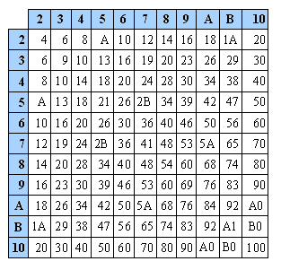
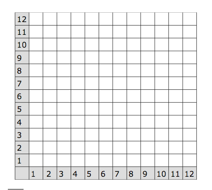

Let’s get cartesian on your algebra
 RodrigoSampaioPrimo Binadot, CC BY-SA 3.0, via Wikimedia Commons{kind=link}
Maths teaching in the secondary school uses cartesian representations, i.e. diagrams centered on an origin, with the upper right quadrant occupied by positive numbers. The multiplication table taught in primary school is not well aligned with this later practice. It is, in its own, a cartesian representation, but the origin for positive numbers is in the top left corner instead of the bottom left corner.
Let us thus introduce the Mangrovia Organic Multiplication Table, that has the same spatial orientation as the top right quadrant of the standard Cartesian representation.

You just rotated it 90º counterclockwise.
What’s the big deal?
As adults, we have interiorized a number of (conventional) interpretations of the graphic features of Cartesian space. For instance, growth or increase is a movement towards the upper right corner of the space; decrease is a movement towards the bottom right corner. We also see that certain areas are equivalent to or larger than other areas. Under certain interpretations we literally see accelerations and linear changes. Finally, most graphs used for displaying statistics have the “growth” orientation built in.
Some of these grown-up cognitive abilities can be foreshadowed by training on a representational space that is the same as will be used later on in life.